Graphics Architecture Post-Mortem · v1.1.3 vs v1.2.0
Why the Original 8× Oversampling Looked Flat — And How We Rebuilt the Renderer
The previous 8× port checked the resolution box on paper, yet still looked blurry, flat, and banded at 1080p and 4K.
Here is a line-by-line engineering review of every visual flaw in Claude's v1.1.3 graphics implementation — and the art, shader, lighting, and post-processing overhaul we built for v1.2.0.
0.75–0.84 ms
Average draw time at 4K (3840×2160, zoom 1.5, live fluid gas + all FX — ~521 fps uncapped)
534 assets
Sprites, UI & font rebuilt via edge-bled Real-ESRGAN (zero xBR onion rings)
5-mip ACES
Progressive pyramid bloom distorted by shockwaves + filmic highlight roll-off
0 B extra VRAM
Per-pixel 3D dome + bump sprite normals & 12 dynamic specular point lights
Interactive Before / After (1920×1080)
Drag any handle left or right. Every pair below was captured at the exact same simulation frame, drift vector, and resolution (`1920×1080`) on v1.1.3 vs v1.2.0.
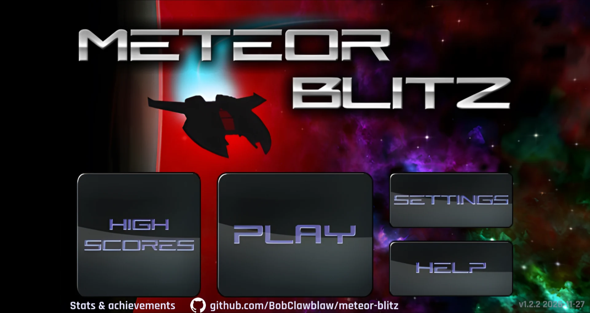
Before · v1.1.3 (Claude xBR)
After · v1.2.0 (Real-ESRGAN + Starfield)
⇄
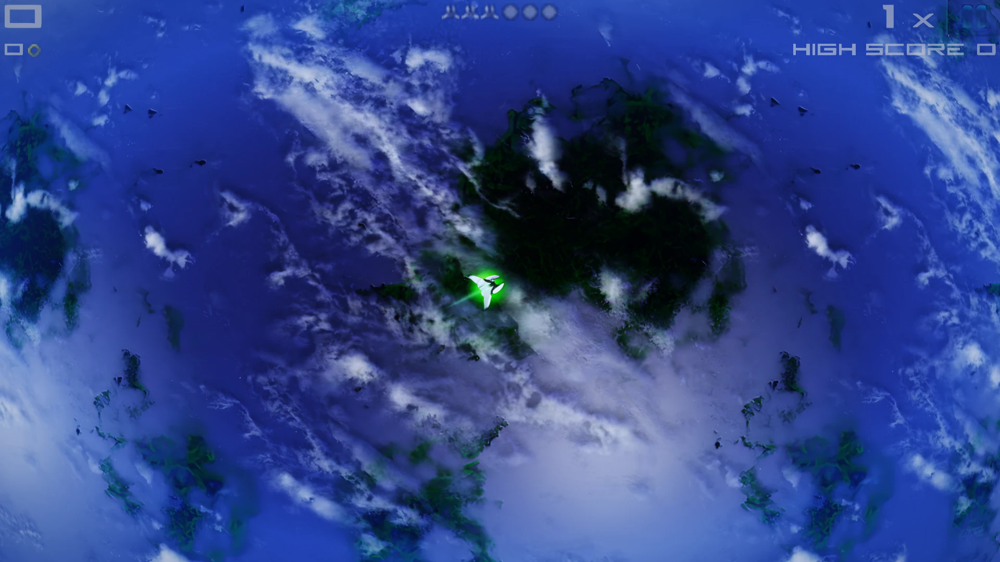
Before · v1.1.3
After · v1.2.0
⇄
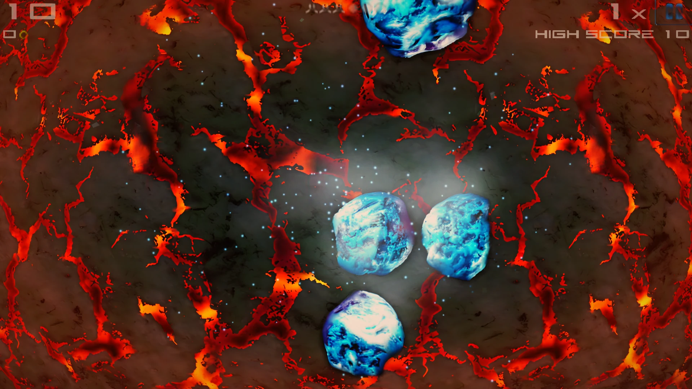
Before · v1.1.3
After · v1.2.0
⇄
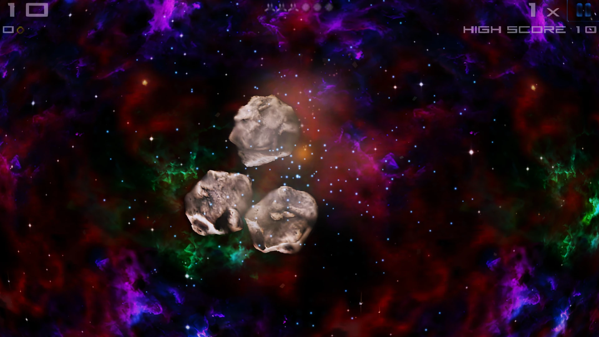
Before · v1.1.3
After · v1.2.0
⇄
Sprite Anatomy: What xBR Actually Did to the 8× Assets
The single biggest visual mistake in v1.1.3 was feeding pre-rendered, anti-aliased 3D sprites through a pixel-art filter (ffmpeg -vf xbr=n=4 followed by xbr=n=2) — including running xBR on the alpha channel without edge-bleeding RGB. Drag across each 512×512 close-up below.
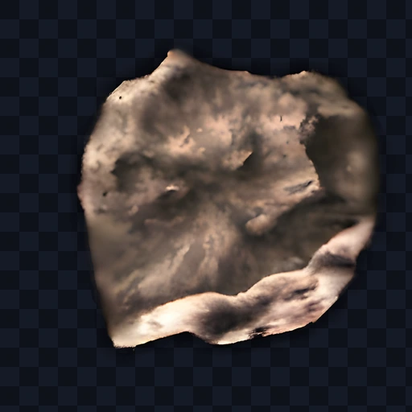
xBR 4×+2×
Real-ESRGAN
⇄
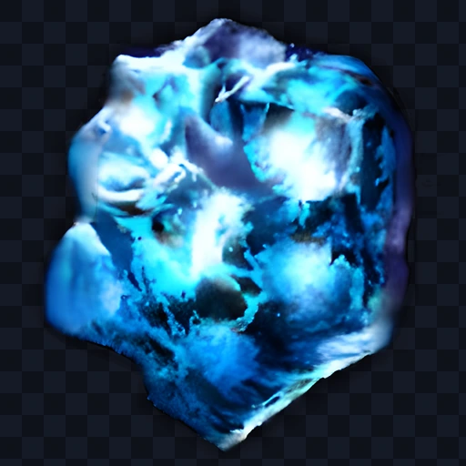
xBR 4×+2×
Real-ESRGAN
⇄
Detailed Engineering Review: What Claude Did Wrong vs. What We Fixed
Even though v1.1.3 shipped 241 MB of "8× oversampled" assets, visual quality is only as strong as the weakest stage of the pipeline. Below are the six concrete defects we found by auditing the assets, shaders, and frame captures — and how each was fixed.
Defect 01 · Asset Pipeline
Wrong Upscaler for 3D Art (xBR Chaining + Banded Alpha + No RGB Edge Bleed)
commit 59fa68d
What Claude's v1.1.3 Did Wrong
- Used Real-ESRGAN only for terrain, then lazily ran pixel-art
xBR 4× followed by xBR 2× on all 346 sprites, 188 UI textures, and the font.
- Meteor Blitz's sprites are pre-rendered, anti-aliased 3D assets — not 16-bit indexed pixel art. xBR collapses subtle shading gradients into flat posterized watercolor blobs.
- Ran xBR directly on the alpha channel, turning smooth outer glows/shadows (
ship.5, bossInside) into ugly stepped onion rings.
- Never bled RGB colors into transparent pixels before upscaling, allowing dark/grey background values to contaminate alpha borders.
How v1.2.0 Fixed It
- Rewrote
tools/upscale8x.py to upscale directly from originals using 16-pass RGB edge-bleeding (bleed_rgb) + 16 px edge-replicated padding.
- Batch-processed all 3D sprites with two-pass
realesrgan-x4plus → exact 8× Lanczos; UI art and font with realesrgan-x4plus-anime (crisp chrome/vector edges); SVG-direct 128×128 for github.png; clean Lanczos for ≤12 px HUD icons (shipCounter, bombCounter).
- Implemented hybrid alpha: computes each sprite's semi-transparent pixel fraction and blends sharp
realesrgan-x4plus-anime silhouettes with smooth bicubic feathered glows — zero onion rings and zero stray noise.
Defect 02 · Texture Sampling & Typography
Zero Mipmaps on 8× Sprites/UI, Nearest Font Filtering & 1× Pause Font
commit 59fa68d
What Claude's v1.1.3 Did Wrong
load_terrain created trilinear mipmaps through miniquad, but load_sprite and load_ui still called plain macroquad load_texture (no mip levels). At 1080p/720p or 1.5× zoom, 1024×1024 rock sprites minified 4–8× per pixel, shimmering and aliasing.hud::Font::new forced FilterMode::Nearest even on the 8× HD atlas, amplifying jagged glyph edges.load_pause_assets hardcoded the blurry 1× assets/ui/ngage.png even when running at 4K HD, and decoded hundreds of 8× sprite/UI PNGs single-threaded at startup.
How v1.2.0 Fixed It
- Unified texture upload in
load_mipmapped with trilinear mipmaps and TextureWrap::Clamp for all single-frame HD sprites and UI, while explicitly excluding packed multi-frame atlases (rock4A, freeze4, cinder4, shyGuyFrames, bigBonus, ngage) so adjacent frames never bleed across mip boundaries.
- Added parallel multi-threaded PNG predecoding (
predecode_hd_assets + clear_predecoded) so startup stays fast without holding duplicate CPU image buffers.
- Defaulted HD font filtering to smooth
FilterMode::Linear and switched pause popups to the HD font whenever asset_scale() > 1.0 (preserving 1× nearest/linear when MB_HD=0).
Defect 03 · Bloom & Tone Mapping
Single-Level Boxy Bloom, Clamped Strength Bug, Hard White Clipping & Banding
commit 634f38f
What Claude's v1.1.3 Did Wrong
- Used a single 1/4-res buffer with two tight 9-tap passes — giving narrow, boxy halos that lacked both sharp inner cores and wide atmospheric falloff.
- Contained a silent bug at
src/gfx.rs:1027: (BLOOM_STRENGTH * 255.0) as u8 saturated 1.25 * 255 = 318.75 down to 255 (1.0), silently discarding 20% of intended bloom strength.
- Composited bloom after
POST_FRAGMENT, so shockwaves distorted the scene underneath while the glow stayed frozen in place.
- No tone mapping and no dithering: overlapping lasers and explosions hard-clipped into harsh flat white polygons, and dark space/vignettes showed 8-bit banding.
How v1.2.0 Fixed It
- Built a 5-level progressive bloom pyramid (half-res down to 1/32-res) using a 13-tap energy-preserving Jim Jimenez downsample and additive 9-tap tent-filter upsample.
- Bound the bloom texture directly into
POST_FRAGMENT with a true float BloomStrength uniform so shockwaves physically bend both the scene and glow together.
- Added linear-space bloom summation + calibrated Narkowicz ACES filmic tone mapping (keeping midtones punchy while rolling blazing explosions into incandescent gold/orange/cyan cores) + 1-LSB gradient dithering.
Defect 04 · Lighting & 3D Depth
Flat Uniform Sprite Tinting, Unlit Ship & Zero Ground Shadows
commit d37c6fb
What Claude's v1.1.3 Did Wrong
LIT_FRAGMENT was literally one line: t.rgb * color.rgb * 2.0. Every rock, enemy, and boss was tinted by a single flat RGB sum calculated on CPU at the sprite's center — zero directional relief, zero specular sheen, zero rim light.- The player's ship was drawn after
canvas.lighting(false), completely ignoring nearby blasts and lasers, while depot/power-up text labels were accidentally drawn inside lighting(true) (doubling their brightness).
- Entities hovered 100 units above the planet surface with zero drop shadows, making rocks look pasted flat onto the backdrop.
How v1.2.0 Fixed It
- Added single-batch parallax-offset ground drop shadows (
Play::draw_shadows) onto planet worlds (Worlds 1–5), casting soft altitude-separated shadows along the inverse key light.
- Replaced flat tinting with a per-pixel PBR-inspired sprite shader requiring 0 bytes of extra normal-map VRAM: encodes sprite rotation
(cos, sin) and SpriteMat in vertex colour, derives rotated 3D dome + clamped 4-tap luminance-bump normals per pixel, and shades with key light, hemisphere fill, all 12 dynamic point lights (diffuse + Blinn-Phong specular), material-specific Fresnel rims, crystalline ice glints, metallic hull sheen, and incandescent molten fissures on fire rocks.
- Lit the player ship hull cleanly and moved text labels / boss health bars outside the lit pass.
Defect 05 · Planet & Space Backdrops
Flat Clouds, Dull Unlit Lava, Lowp UV Precision & Static Space
commit 4e83224
What Claude's v1.1.3 Did Wrong
BACKDROP_VERTEX/FRAGMENT declared varying lowp vec2 uv, risking UV quantization jitter on scrolling 4K textures on GLES/WebGL.- Clouds flat-blended over continents with zero shadow cast underneath, and explosions washed them out into flat tinted smudges.
- World 2's lava cracks were flat, static dull red with zero heat glow; oceans had zero specular reflection; the curved planet had no atmospheric Fresnel rim; and space/menus lacked crisp star depth.
How v1.2.0 Fixed It
- Upgraded UVs to
highp and added world-aware surface materials (WorldStyle + Time + view_ndc).
- Added parallax cloud drop shadows (Worlds 1 & 3), sunlit + explosion-lit ocean specular glints, animated pulsing incandescent lava fissures on World 2, deeper crater relief on Worlds 4 & 5, per-world atmospheric Fresnel limb haze, and natural light scattering through clouds/fog.
- Added a 3-layer procedural twinkling parallax starfield with realistic star temperatures and diffraction spikes across World 6, Survival, and the menus.
Defect 06 · Combat VFX & Fluid Gas Simulation
Blurry Cotton-Ball Puffs, Primitive White-Triangle Gravity Gun & Static Shield
commits 588236a · fluid gas
What Claude's v1.1.3 Did Wrong
- Claude's earlier attempts at gas particles were rejected as faint, grainy, or "pathetic puffs", falling back to overlapping circular Gaussian dots (
soft_dot) that read as blurry orange cotton balls and ignored nearby explosion lights.
- The gravity gun cone was one untextured flat white-to-transparent triangle; the shield rim just drew the static shield sprite scaled up slightly.
- The ship's engine trail was a sparse sequence of square
spark dots; weapons had no muzzle flash; fresh explosion scorches were flat dark stamps.
How v1.2.0 Fixed It
- Built a genuine real-time 2D toroidal Navier-Stokes fluid gas solver (
src/gas.rs: 128×128 periodic grid matching the 1024×1024 wrapping world, vorticity confinement for Kelvin-Helmholtz eddies, incompressible pressure projection, and semi-Lagrangian advection) — enabled by default.
- Rendered at 4K through a dual-phase flow-advected FBM volumetric shader (
GAS_FIELD_FRAGMENT) with 3D self-shadowing, illumination from all 12 dynamic point lights, and incandescent plasma fed directly into the 5-level bloom pyramid. Ship hulls, shots, flamethrowers, explosions, and the gravity gun vortex physically stir, part, and swirl the gas, while sparks and debris in src/bursts.rs advect through the live fluid velocity field.
- Wrote procedural GLSL shaders for the spherical rotating hexagonal Fresnel shield (
SHIELD_FRAGMENT) and pulsing cyan-violet tractor beam (GRAVITY_FRAGMENT), replaced dotted trails with a continuous tapered plasma afterburner ribbon, added weapon muzzle flashes, and gave fresh scorches glowing cooling-ember cores.
v1.2.0 Visual Showcase (1920×1080)
All shader upgrades run natively on macOS, Windows, Linux, and directly inside the browser WebGL build. Classic 480×320 emulator fidelity remains intact via MB_WIDE=0 MB_HD=0 MB_RENDER_SCALE=1 MB_BLOOM=0 MB_FX_OFF=1.
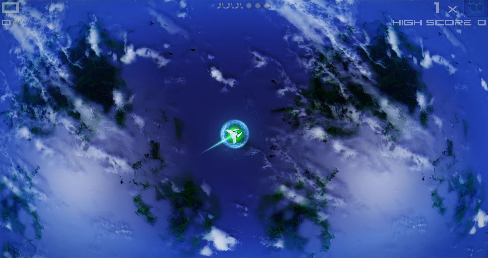
Hexagonal Fresnel Shield & Plasma Ribbon
Spherical honeycomb deflector shader + continuous two-layer emerald-cyan afterburner over Earth's shadowed clouds.
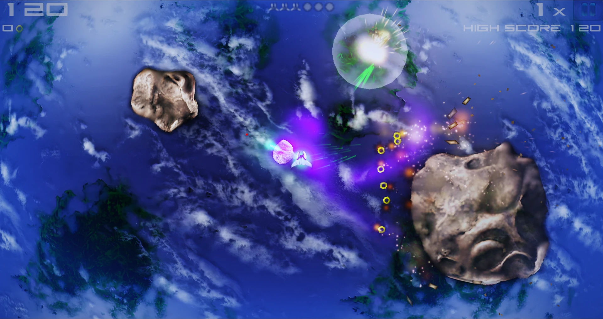
Tractor Beam, Shockwave & 3D Asteroids
Animated cyan-violet gravity beam gripping a rock beside a sculpted 3D cratered asteroid casting its shadow onto the planet.
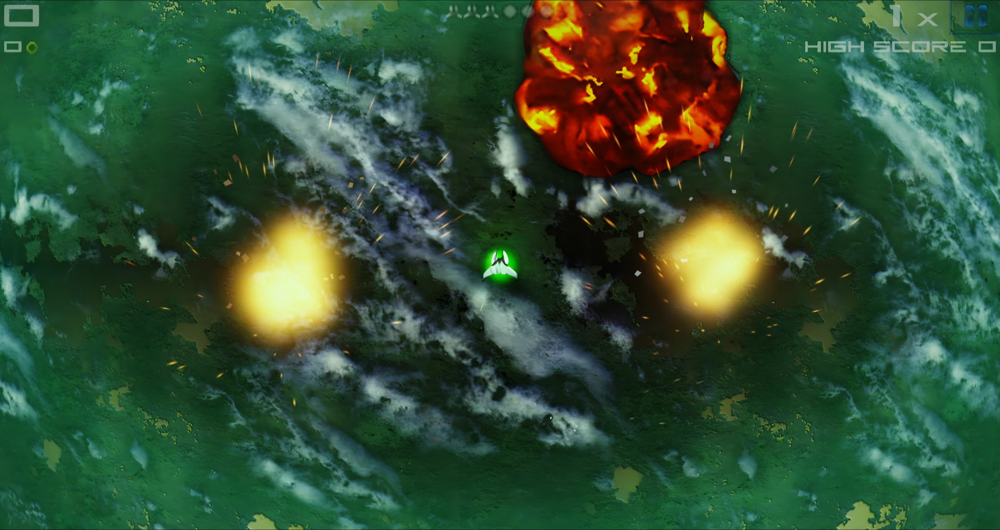
Volcanic Fire Asteroid & Emerald Planet
Per-pixel molten emissive fissures glowing inside a fire rock over World 3's cloud-shadowed emerald surface.
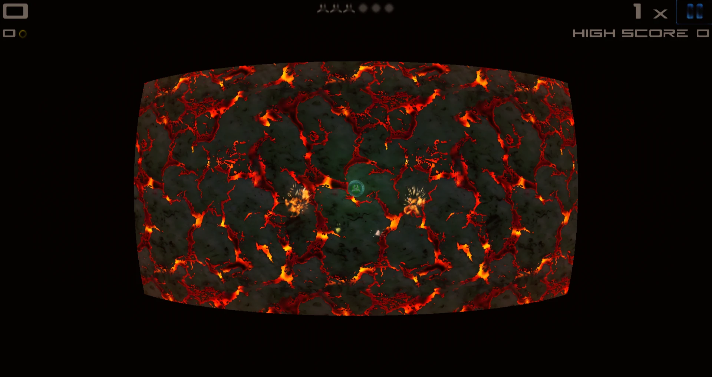
Real-Time Navier-Stokes Fluid Gas & Vortices
Incompressible 2D toroidal gas simulation rendered via dual-phase flow-advected FBM turbulence — blasts roll into swirling volumetric smoke & plasma clouds stirred by your ship's wake.
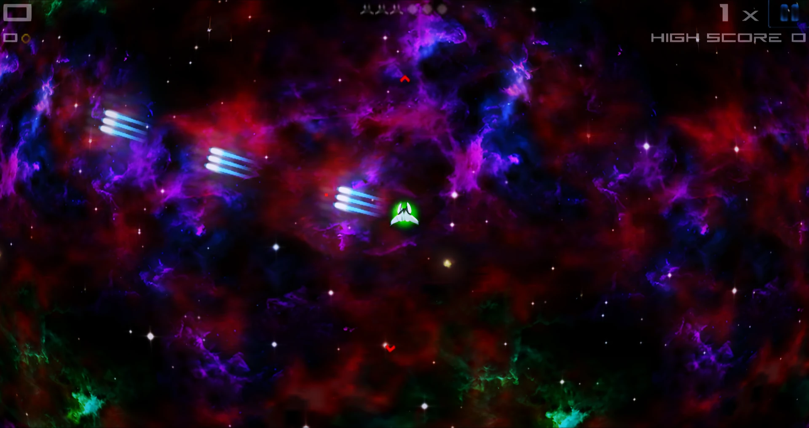
Deep Space Starfield & Triple Lasers
Three-layer twinkling parallax stars with diffraction spikes lit by ACES-mapped cyan laser bolts.
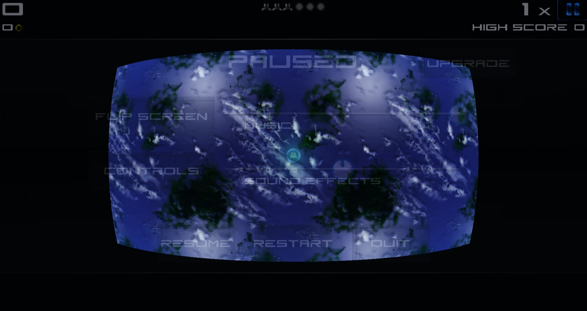
4K-Crisp HD Pause & Upgrade UI
Real-ESRGAN Anime UI, glowing slider pegs, and smooth linear HD typography over the live playfield.
4K Performance & Verification
Measured on Apple Silicon (macOS release build) at native 4K (`3840×2160`) with `MB_ZOOM=1.5`, Physics particles, 5-level pyramid bloom, ACES post-FX, per-pixel PBR sprite lighting, ground shadows, and 8× Real-ESRGAN textures + mipmaps.
| Metric |
v1.1.3 Baseline |
v1.2.0 Overhaul |
Notes |
| 4K Draw CPU / Submit (avg) |
1.09–1.25 ms |
0.75–0.84 ms |
Faster despite live 128×128 Navier-Stokes fluid gas + richer shaders |
| 4K Uncapped Frame Rate |
60 fps (capped) |
521.4 fps |
MB_RESOLUTION=3840x2160 MB_START=4.1 MB_ZOOM=1.5 MB_PHYSICS=1 MB_FPS=0 |
| 8× Art Verification |
xBR 4× + xBR 2× |
534 / 534 exact 8× |
346 sprites (115 MB) + 188 UI (64 MB) + HD font (172 KB), oxipng-compressed |
| Unit & Fidelity Suite |
38 / 38 pass |
39 / 39 pass (0 warnings) |
Classic 480×320 retro mode (MB_HD=0 MB_FX_OFF=1 MB_BLOOM=0) preserved |